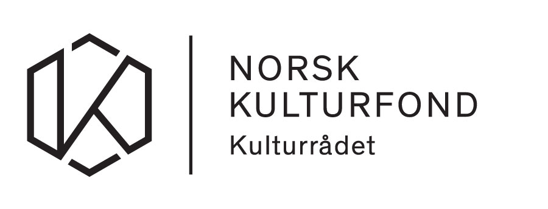
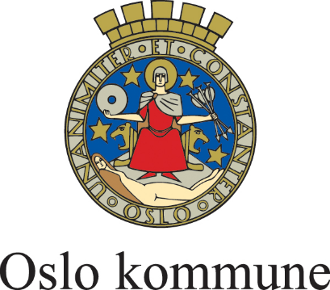
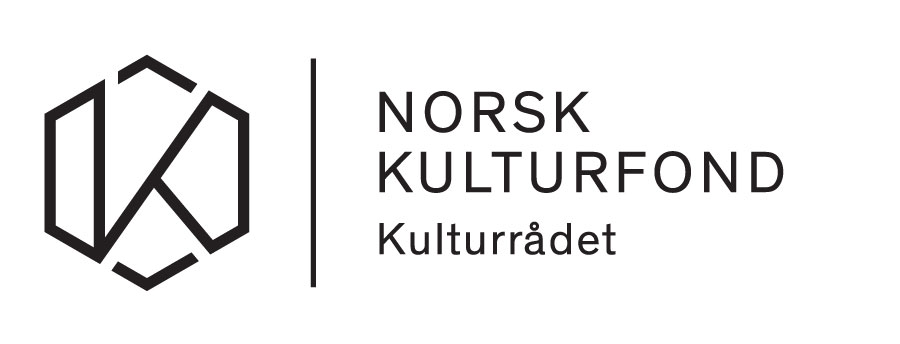
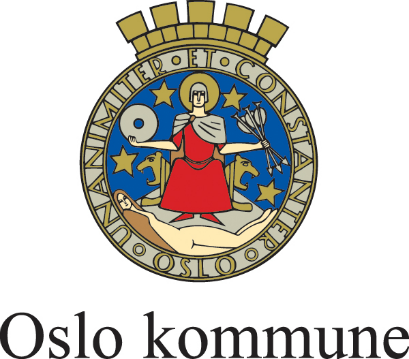

FEMTIMETEREN
Femtimeteren er et koreografisk arbeid med lyd. Ved hjelp av sykler, skateboards, løp og gange, gis lyden kropp og fart. Publikum plasseres midt i rommet, lydene passerer nært og fjernt, sirkler rundt, og brer seg ut på kryss og tvers.
Femtimeteren er spesiallaget til Kanonhallen
- en femti meter lang industrihall på Løren i Oslo
Torsdag 11. oktober kl. 19.00
Fredag 12. oktober kl. 19.00
Lørdag 13. oktober kl. 19.00
Søndag 14. oktober kl. 19.00
Enkleste reise til Kanonhallen fra Jernbanetorget (20 min):
T-bane 4 Vestli via Majorstuen, til Løren.
Billett kjøpes i døra, info om forhåndsalg kommer.
Pris: 180 kr
IDÉ/UTØVELSE/KOREOGRAFI/KOMPOSISJON:
Fredrik Rasten, Marie Bergby Handeland, Mathilde Øverland, Erlend Albertsen, Hans Pålsen Kjorstad og Catharina Vehre Gresslien
Lysdesignd
Sparringspartner
Tegning
Ingeborg Staxrud Oleru
Harald Fetveit
Hallvard Surlien
 


